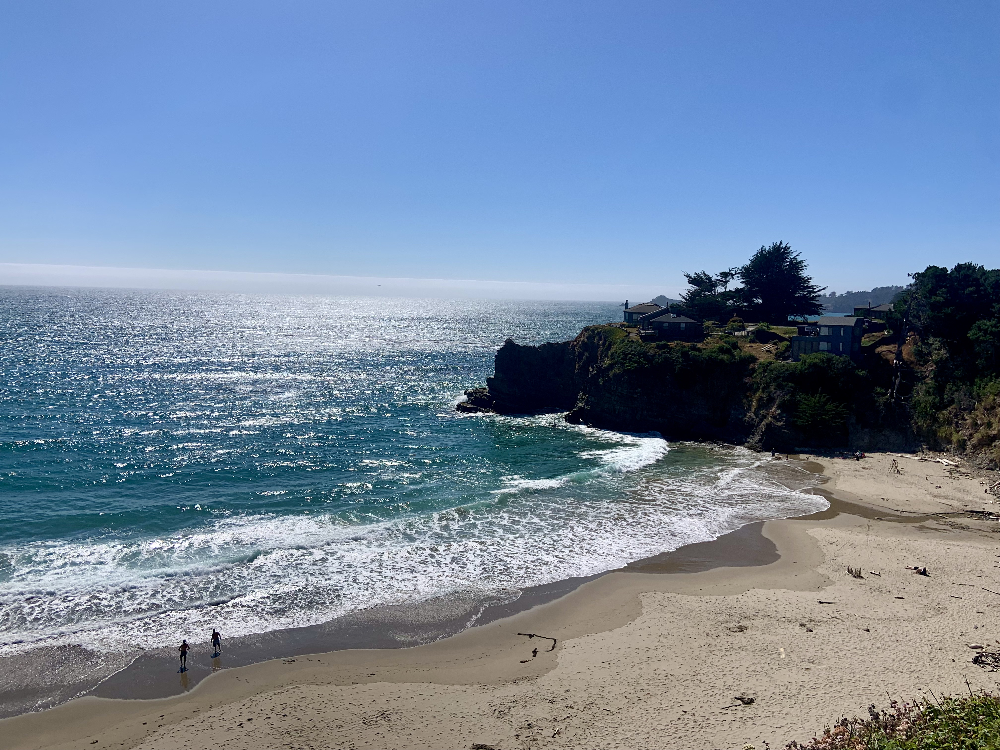
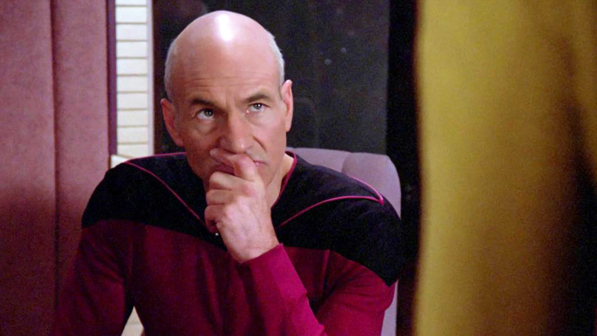
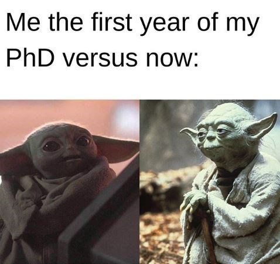
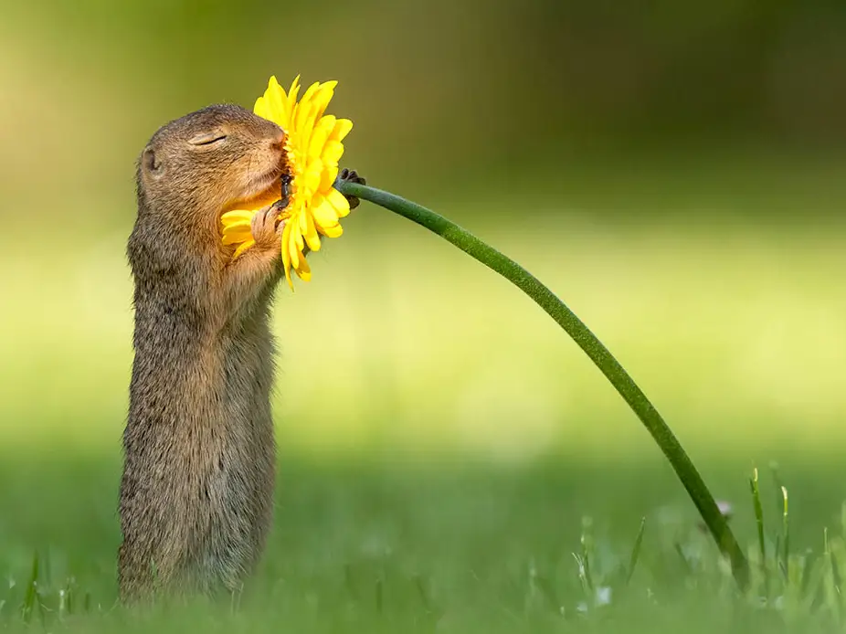

In the last few posts, I have provided an overview of my PhD in Biomedical Informatics and Computational Genomics that I completed under the mentorship of Dr. Dokyoon Kim at the University of Pennsylvania Perelman School of Medicine. You can listen to a full presentation of my thesis defense here, and you can read the full text of my dissertation here. In today’s post, I will conclude this series on my doctoral research with my personal takeaways and tips for picking, pursuing, and finishing a PhD program.

Motivations
I’ll start this post with explaining some of my personal motivators for pursuing a PhD.
Why did I choose to pursue a PhD after my undergrad?
As I explained in my previous post describing my professional journey, I’ve always wanted to be a leader in impactful projects that made a clear benefit in people’s lives. When I was an undergrad, I began to research job opportunities that I found aligned with my interests. Looking at the qualifications required for these roles, and based on further advice from colleagues and mentors in my summer internships, I realized that in order for me to be able to become a leader in an interdisicplinary field in the future, I would have to pursue education beyond my undergraduate degree. Without a Master’s or PhD, I knew that I would eventually hit a wall in my career progression.
I knew earning a graduate degree in the future after working for some time was a completely valid option. But, I also felt that knowing my own personality, it would be harder to bring myself back to school after a few years - I would feel the pay differential more keenly, and I would have to retrain myself to become a student. So, I decided to apply for graduate programs during my senior year of college.
I considered both Master’s and PhD programs, but in weighing the opportunity costs for the computational fields I was considering, I ended up focusing my attention on doctorate degrees. I knew that a PhD would help me transition more clearly into cutting-edge research-based career opportunities. I also ideally wanted to avoid having to pay for a Master’s degree. A PhD program, on the other hand, would support me with a stipend for the duration of the program. Finally, I knew that with a computationally-focused PhD, it would be very reasonable to aim to graduate in about five years, which would be shorter than the average timeline for a PhD in the United States.
I applied only for PhD programs where I knew I would feel content about spending 5+ years of my time. I also applied to one Master’s program in case I didn’t get in to any PhD programs. If nothing worked out for me, my back-up plan would have been to try to find a 1-year Master’s program attached to my undergrad or look for a short-term research position so that I could gain more experience and reapply fully for Master’s programs in the following year. Luckily, PhD admissions worked out, and I found a program that fit with everything I was looking for!
Why did I apply for bioinformatics programs?
I chose to apply for bioinformatics / computational biology programs based on both my interest in the field as well as my likelihood of getting into such a department. I had always been motivated by the concepts of interdisclipinary research involving informational technology. So, I knew that I wanted to pursue a graduate degree related to data science, computer science, or statistics. At the same time, focusing on the area of biomedical research felt like an untapped market to me - there was so much data to work with and so much opportunity to advance the field. My time at Duke also gave me extensive exposure to research in the biomedical informatics domain. As a result, I felt that I would be a competitive applicant for cutting-edge programs in biomedical informatics and computational biology compared to other disciplines. I also felt that even if I wanted to pivot to a career that didn’t involve biomedical applications in the future, having a computational PhD would be sufficient to qualify me for such roles.
Why did I pick Penn Genomics and Computational Biology?
Coming from a more computational background, I wanted a program that could help me catch up in topics in which I was lacking while also advancing further in my training for subjects where I already had the expertise. Penn GCB offered a very customized approach for selecting coursework, allowing me to take more foundational classes in genetics and molecular biology while pursuing more advanced curriculum in statistics and computer science.
Penn also had multiple professors under whom I could see myself working, as well as access to interesting medical data due to its association with the University of Pennsylvania Health System.
I also considered the happiness of students currently in the program and the livability of Philadelphia. It was apparent to me after my interview weekend that students were able to have fulfilling lives outside of their research, and that Philadelphia would be an exciting (and affordable) city for me to spend my twenties!
Lastly, I appreciated that Penn offered the opportunity to pursue a free Master’s degree in Statistics and Data Science from the Wharton School of Business concurrently with my PhD. Given my undergraduate degree in Statistics, I felt that this would be something I could more easily pursue, and that it would also give me a leg up in terms of foundational knowledge and branding in the future if I chose to pivot away from biomedical research.

How did I choose my Principal Investigator (PI)?
The highest priority for me in picking my PhD lab was finding a group whose research spoke to me. After this, there were a few pieces that led me to settle on Dr. Dokyoon Kim.
Coming directly out of my undergrad, I knew that I would need a lot of support from my PI. So, I wanted to work with a more junior professor who would have the time to help me when I needed it. I also liked the idea of being one of the first students in a new lab and marking my own path. Based on my rotation, I could tell that my PI was highly attentive, and I had plenty of face-time with him each week, as well as support from post-docs and engineers in the lab whenever I needed it.
Further, I appreciated that my PI had a program set up with internationally-based clinicians to stay in Philadelphia and work in the lab each year. This gave countless opportunities to learn from and collaborate with people in the medical field as well as gain deeper insight into the impact that our projects could have downstream.
Lastly, it just so happened that my rotation with my PI coincided with March 2020, the start of the full impact of the COVID-19 pandemic on the U.S. In the face of entirely remote work for an unknown amount of time, it was immediately apparent to me that my PI would be great about supporting me virtually for however long we were required to work from home.
How did I choose my dissertation topic?
To read more about the context and content of my dissertation, you can read my previous posts here and here.
Personally, I’ve always found that I excel the most when I am passionate about the projects I’m pursuing. It is important for me to not only see the motivators of my work, but also its downstream impact. As a result, I wanted to pursue a dissertation that felt intuitive and important.
Coming from a computational background, I did not have a disease area of interest that I had to focus on. Indeed, the biological question at hand was less important to me in my initial choice of project than its impact.
Lastly, I wanted the opportunity to familiarize myself with new types of data, to develop new computational methods and tools that could be used by the biomedical research community, and to see the translational impact of my work on people’s lives.
My rotation project (you can read the published manuscript for this project here) gave me an incredible view into the potential of my research trajectory at the start of my PhD. I loved how intuitive the baseline concepts of network medicine were, and I could see how it had the potential to bring together scientific storytelling aspects of data visualization with advanced technical research in graph-based machine learning. Ultimately, this dissertation topic felt like something that I could truly take full ownership of.
Takeaways
Here are my personal views on the pros and cons of doing a PhD:
My personal PhD pros
- I gained strong interdisciplinary expertise in my subject matter:
- Biomedical informatics, computational genomics, translational science
- Data science, software development, statistics, machine learning
- I learned how to conduct independent research and lead the direction of projects
- I gained valuable experience in mentoring and teaching others
- I was able to network with many amazing colleagues both in academia and industry in my discipline
- I was able to keep making income throughout the duration of my degree
- After my degree, I am taken more seriously by people in my field whom I meet for the first time
- I feel tremendously prepared to take on leadership roles in exciting interdisciplinary research areas in the future
My personal PhD cons
- Having a PhD will make the jobs that you seek more niche
- When you pursue a PhD for career advancement, you’re typically seeking a career that is beyond the norm
- Bachelor’s-level (and to an extent, Master’s-level) jobs are less individually unique from one another, but they are more broadly available (e.g. software engineer)
- Finding the right type of opportunity for a PhD-level individual requires patience
- Pursuing a PhD is a stressful experience!
- It can be hard to set boundaries between your work and your personal life. There are no clear deadlines for your projects either… your work will expand to fill your time unless you set your own pace
- A lot of luck is involved in how quickly you can make progress. There are so many factors out of your control that can affect the success of your experiments and your publications
- There is a financial cost to pursuing a PhD
- If you can be accepted to a PhD program, then you can be accepted to a much higher-paying job in industry. It is a very personal decision regarding whether or not this drop in salary is worth it
Advice
Based upon the experiences I had throughout my PhD, here is my advice for current, incoming, and aspiring PhD students.
Choosing to do a PhD
The biggest piece of advice I have here is… make sure you’re doing a PhD for the right reason.
It’s important to think about why you want a graduate degree in the first place… Becoming a professor? Seeking those longer-term “extraordinary” opportunities in industry? Pure academic curiosity?
- I know people in all three of these camps, and I think they’re all very justified reasons. There are plenty more reasons to do a PhD outside of these - everyone has their own individual biases that draw them to the experience.
There are also plenty of reasons NOT to do a PhD.
The worst reason to pursue a PhD is for the “prestige.”
If you don’t find yourself intrinsically excited about the work you’re doing at the end of the day, then stop wasting your time! It’s not worth spending so much time on something just because you want other people to think more of you.
A caveat - this lack of intrinsic excitement is different from joining a PhD program and then experiencing lulls in your research where you’re frustrated with your progress. This latter occurrence is totally normal and quite common! At the end of the day, when the experiments work out, you’ll remember why you started your program in the first place.
The second worst reason to pursue a PhD is that you don’t know what else to do with your time.
- Getting a PhD is not a passive experience. You cannot just “let it happen to you.” You have to be active about seeking out opportunities, making connections with others, and progressing on your work in order to succeed.
If you find yourself in either of these camps, then I can guarantee that you will be miserable and that you will burn out.
If you want to gain more knowledge, there are plenty of more lucrative / less time-intensive ways to do so than pursuing a PhD:
Pursue a different type of graduate degree
Find a job relevant to your career
Join a technical bootcamp
Take individual classes / online courses
Pursue independent projects (maybe even start a blog! ;))
There will always be a tradeoff when you decide to pursue a PhD. Some doors will open and other doors will close. Think about what’s best for YOU in your life and for your career.

Selecting a program
I’ve discussed earlier why I personally chose to attend Penn GCB, but here are some good questions to ask yourself when selecting a PhD program to attend:
- Do you like the work that you’ll be doing?
- This is the whole point of a PhD - to do cutting-edge work. You need to like the field you’re in and the opportunities that will be available to you
- Is there more than one professor with whom you could see yourself working?
- Even if you have a professor who has committed to taking you on, this point is important to consider. Professors are people too, and they move around universities all the time. Make sure you’re not joining a program just because of a single person - otherwise, if they leave or if you position doesn’t work out, you may find yourself scrambling to find a new professor in the middle of your PhD who may not even align with your research interests.
- Will you have the right level of support for your background?
Some people will come with a lot of experience and need less guidance when they start their PhDs. Others will come with minimal experience and need more hand-holding.
- I was in this second camp - I needed lots of hand-holding for biomedical concepts, and I wanted more independence in my explorations of computer science and statistics
Make sure that the program can help you up-skill as needed (i.e. through coursework, registering for conferences / workshops, connecting you with the right mentors, etc.)
- How is work-life harmony handled in this program?
I cannot stress this enough - you are more than your work. You will need to work hard in a PhD, but you cannot let it absorb your entire life. You will burn out if you do. A PhD is a marathon and not a sprint.
You won’t necessarily need an active student community, but your peers are the only people who will truly understand the day-to-day of what being a PhD student means. You’ll find that being a part of such a community can be tremendously rewarding, and that your colleagues will be a huge help in your times of need.
You can gauge the status of how well work boundaries are set by your program through the students you meet during interview/admit visits. Obviously a lot of your work-life balance will come down to the lab you join. But in general, are the students happy with their choice to join this program? Do they have time for things outside of their work?
- Do you like where will you be living?
Do you like the location of the program? Can you see yourself spending 5+ years there?
Is the place you’re living affordable given the stipend that the program offers? How are housing/rental costs in the area?
Is it easy to get to work? If not, how often will you expect to be coming in to campus?
- How does the program support career progression and what are the types of opportunities that may be available to you after graduation?
What kinds of support systems does the program have for career development?
- Is there support for internships? Fellowships / grants? Travel opportunities to conferences? Mentorship / teaching opportunities? The ability to earn additional certificates / degrees?
What do alumni from the program usually do after graduation? Where (physically) do they end up? How much did the program and/or their research focus help with finding a job?
In these situations, when you have an admission to a program and you’re trying to decide on it, it’s great to speak to not only current students but also alumni to get a sense for the pros and cons of the program. You may not know the right questions to ask during these informational interviews, but if the program has a good community, then they’ll be happy to help you out regardless.
Selecting a thesis advisor
Your PhD advisor doesn’t have to be your best friend, but you should ideally have a friendly relationship with them :) Are they a nice person to work with? Do they have your best interests at heart? Or are they more concerned with using your time and work to advance the standing of their lab?
Do you like the work that you’d be doing with this PI? It’s important that you don’t pick a lab just because you like the mentor’s personality.
Pick a PI who will lift you up rather than hold you down
You want to be challenged, but you don’t want to make life harder for yourself. Your PI is directly responsible for:
the type of research you explore
when you graduate
how much work-life balance you have
At the end of the day, a great PI should always be your advocate!
Regarding co-mentorships…
Co-mentorships across two groups can be great if you have the right projects in mind and need both labs’ expertise.
However, these can also go very poorly if your work aligns more with one group than the other. There’s a high likelihood that you will fall between the cracks and be stuck in your PhD for much longer than you need to be.
- Sometimes it’ll still work out, especially if both PI’s already collaborate. But in these cases, I personally think it seems unnecessary to have both professors be your mentor. You can always have one of these professors serve on your thesis committee instead.
Here’s my personal opinion… If you are coming in with less experience, I would advise picking a single PI. If you are coming in with more experience and know exactly what type of dissertation you want to work on, then you can consider multiple PIs.
Picking research projects
Here’s a big “duh” piece of advice – pick a research topic you’re excited about! Why would you spend 5+ years of your life on something that doesn’t get you excited?
Another point - prioritize skill-building when you can, but don’t prioritize it over progress on your dissertation.
- You can up-skill in specific areas as much as you want after your PhD. If you are distracted by “side-quests,” you will take longer to graduate when you could have instead finished your degree earlier and kept progressing in your career.
Think about the trade-off between your academic passions and the logistics of your work. Try to find the optimal balance across academic curiosity, skill-building, and time required for the research project.
- Data generation will always take longer than expected. The easiest way to cut down on the time needed for your PhD is to work on projects where the data are already generated :)
Wrapping up your PhD
In my personal opinion, ending a PhD is an exercise in self-confidence and believing in oneself. Ultimately, completing your PhD means knowing how to advocate for yourself.
This can be easier or harder depending on your PI and your thesis committee. Some PIs / committees will be on the same page as you. They may even say themselves that it’s time for you to defend.
Others will not tell you they think you are ready to leave. It is up to you to justify in your committee meetings why you feel qualified to defend and graduate.
Here’s my biggest indicator for when it’s time to graduate - when you no longer feel that you NEED guidance from your superiors.
- You don’t need to feel that you have nothing more to learn. In fact, pursuing a PhD will teach you that you always have more to learn!
- You don’t even have to have fulfilled all the goals of your dissertation… the aims that you come up with at the start of your disseration are somewhat arbitrary benchmarks.
- Instead… Are you able to devise a full research project concept and methodology? Can you procure the right data and follow through on the analysis? Are you able to communicate your results in a cogent, impactful manner?
I hit a point toward the end of my PhD where I felt I could still keep learning and exploring, but I was coming up with all of the directions of the exploration myself. In other words, I was an independent researcher! This was my cue to wrap up and defend.
With that, we’ve reached the conclusion of my series on my doctoral research! If you’ve read this far, I hope you found the information I shared to be useful. The process of picking, starting, and completing a PhD is a tremendous challenge, and if you’re struggling at any point with any of the concepts I’ve covered today, feel free to reach out to me on LinkedIn or shoot me an email at vivek.sriram@gmail.com! I am always happy to chat and offer my two cents.
And a last reminder… as I’ve said earlier in this post - you are not your work! Regardless of the stressors and major decisions that surround you, never forget to remember what matters most at the end of the day: your personal happiness and well-being. Make sure to take time to enjoy the little things in life, like this squirrel :)
